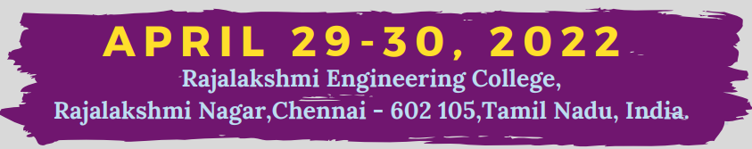
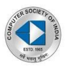
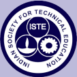
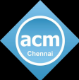

| HOME | REGISTRATION | TIMELINE | RULES | FLYER |
Rajalakshmi Engineering College, an autonomous institution affiliated to Anna University, Chennai, was established in the year 1997 under the aegis of Rajalakshmi Educational Trust whose members have had consummate experience in the fields of education and industry. The College has grown from strength to strength in the last 25 years and is progressing towards Excellence in Engineering Education, Research and Development.The College presently offers 17 Under Graduate and 9 Post Graduate programmes including MBA program, with an annual intake of 2000+ students. The approval of AICTE and affiliation of Anna University for such a progressive intake is a standing testimony for the continuous growth of the college over the years. Rajalakshmi Engineering College is a dynamic growth oriented college facilitating and promoting professional education and research in emerging areas of higher education. The college aims at inculcating essential skills as demanded by the global industry, through the interactive learning process.
Digital Era marks advancement in technology and the new development model enforces a mutual compatibility between economic development and the ecosystem. Green transformation is the widespread required way of development after industrial revolution. EDGE 2022 aims to provide a premier interdisciplinary forum for the academicians, researchers, industrialists and practitioners to exchange the latest advances and applications of digital life applied to the next generation. The conference provides a platform to present the most recent research findings, latest advancements, challenges and explore the future directions in the new Digital Green Era. The event marks a national/international networking of peers and experts for collaboration and information sharing. Learn More

The conference will provide an opportunity for
|  |  |  |